Paper-EAST-An Efficient and Accurate Scene Text Detector
目录
资源
PaperWithCode：EAST: An Efficient and Accurate Scene Text Detector | Papers With Code
Mindspore：models: Models of MindSpore (gitee.com)
Pytorch
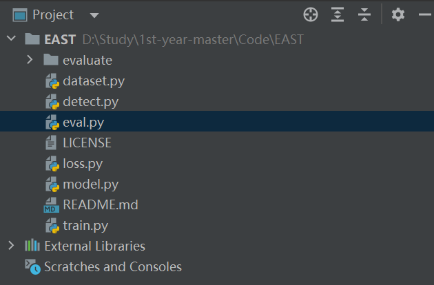
conda 中新建一个 EAST 环境（
conda create -n east python=3.7）并安装好：- pytorch
- shapely
- opencv-python 4.0.0.21
- lanms，巨难装，用
pip install lanms-neo==1.0.2 -i https://pypi.tuna.tsinghua.edu.cn/simple
设置好解释器
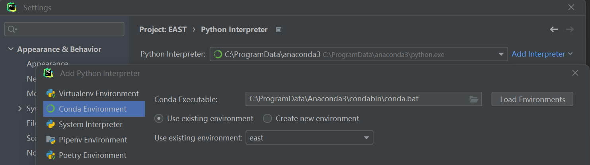
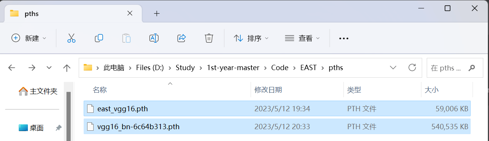
- 从 Downloads - Incidental Scene Text - Robust Reading Competition (uab.es) 下载好 ICDAR 2015 Challenge 4 数据集，解压并按规则放在对应的文件夹中（原项目想放到工程外面，我改到了工程里面）
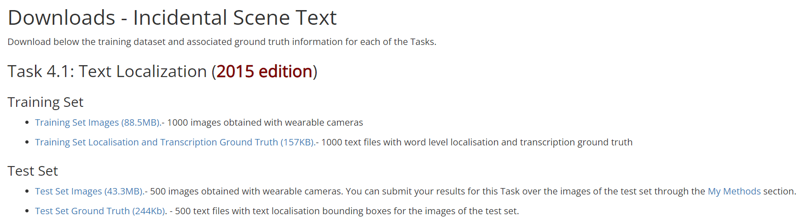
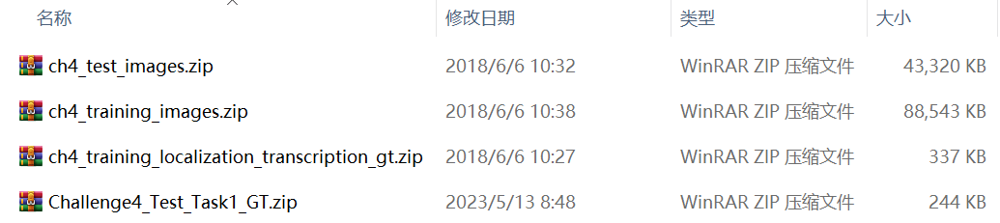
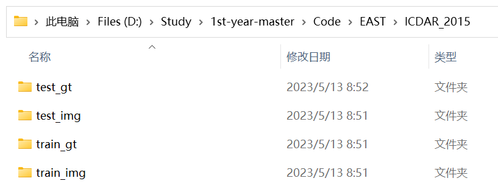
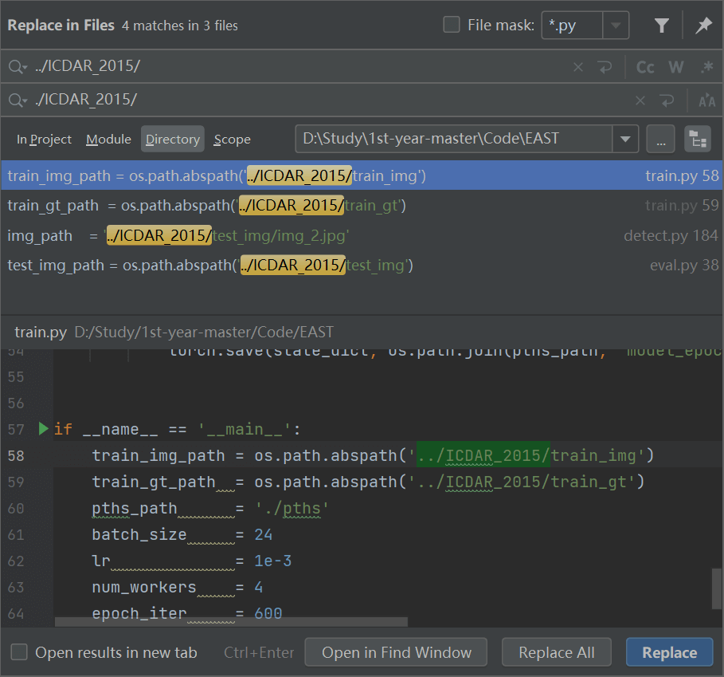
- 开跑
detect.py！
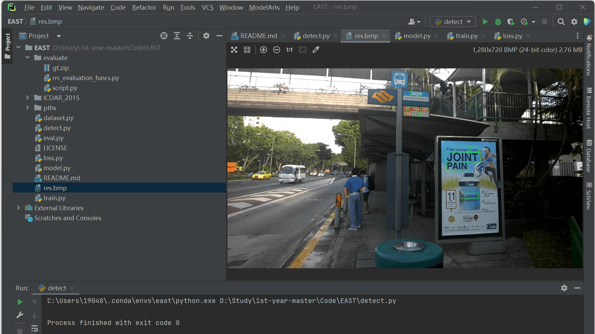
开跑
train.py！喜提错误：UnicodeDecodeError: ‘gbk’ codec can’t decode byte 0xbf in position 2: illegal multibyte sequence！在dataset.py中的第 382 行with open(self.gt_files[index], 'r') as f:改成with open(self.gt_files[index], 'r', encoding='utf-8') as f:填之。开跑
train.py！喜提错误：torch.cuda.OutOfMemoryError: CUDA out of memory. Tried to allocate 1.50 GiB (GPU 0; 8.00 GiB total capacity; 3.14 GiB already allocated; 2.79 GiB free; 3.15 GiB reserved in total by PyTorch) If reserved memory is >> allocated memory try setting max_split_size_mb to avoid fragmentation. See documentation for Memory Management and PYTORCH_CUDA_ALLOC_CONF！在train.py里把batch_size = 24改成batch_size = 4填之。- 开跑
train.py！能跑了！
MindSpore
- 变更一个 mindspore 2.0 的镜像，太旧的 mindspore 会寄
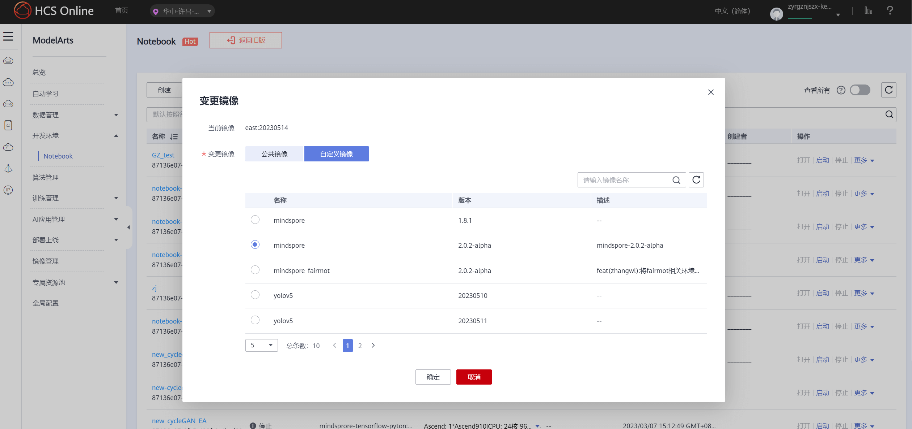
- 从 EAST for Ascend - Gitee.com 把仓库整下来，最好整到
work/文件夹里，这样服务器重启过后数据还能保留。训练这玩意还需要：
Dataset: ICDAR 2015: Focused Scene Text，这个数据集，1000 张训练集，500 张测试集
从 Downloads - Incidental Scene Text - Robust Reading Competition (uab.es) 里下
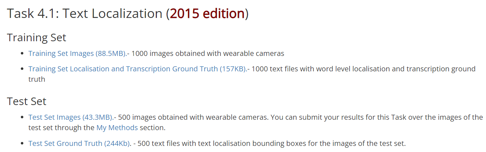
The
pretrained_pathshould be a checkpoint of vgg16 trained on Imagenet2012. vgg 在 Imagenet2012 里预训练过的模型，它还不给下载地址，让我找老半天，哼从 MindSpore官网 - 资源 - Hub 搜索
vgg16，找到 下载地址，下载vgg16_ascend_v190_imagenet2012_official_cv_top1acc73.49_top5acc91.56.ckpt
- 调整仓库里的 parser 参数、数据集的位置和预训练模型的位置，使得路径对应一致。
In this project, the file organization is recommended as below:
.
└─data
├─icdar2015
├─Training # Training set
├─image # Images in training set
├─groundTruth # GT in training set
└─Test # Test set
├─image # Images in training set
├─groundTruth # GT in training set
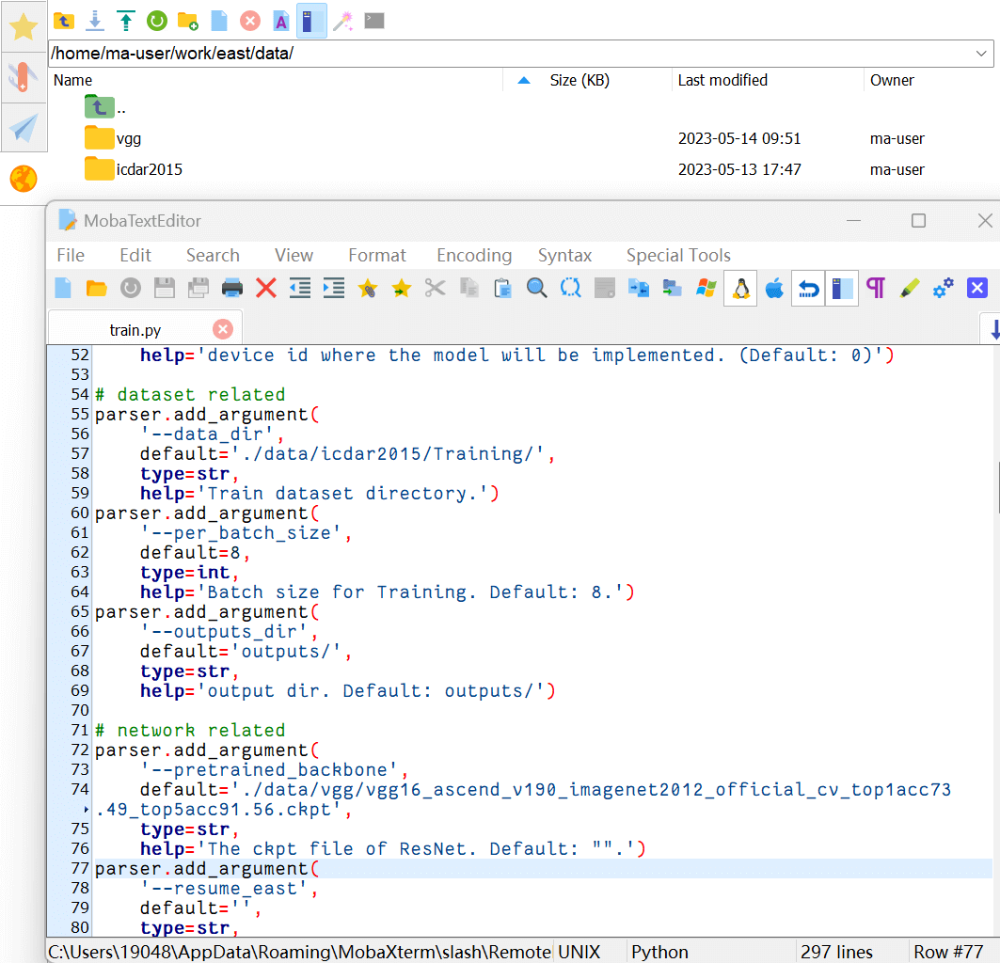
- 安装环境一条龙！
requirements.txt里面的玩意着实难装，还是手动装好了……
|
装好环境后可以保存一下镜像，这样下次重开服务器的时候就会保留之前安装好的环境：
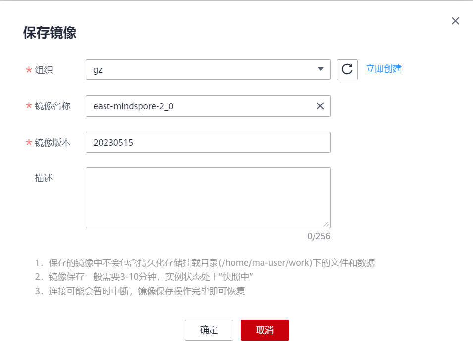
- 切到仓库目录，开跑！
|
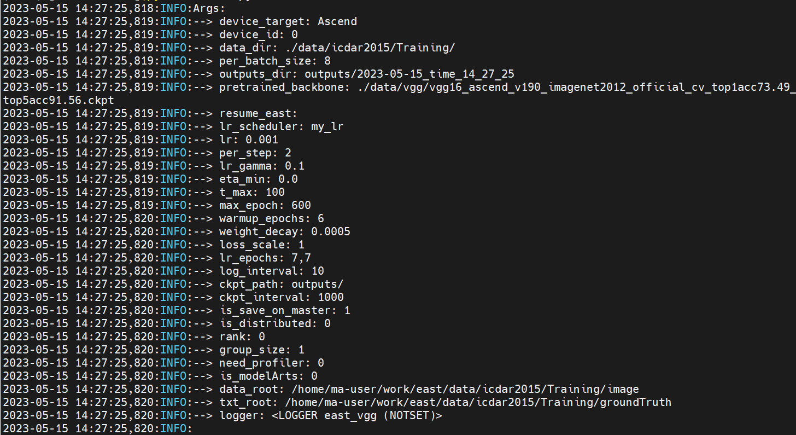
显示完超参数后，等呗。
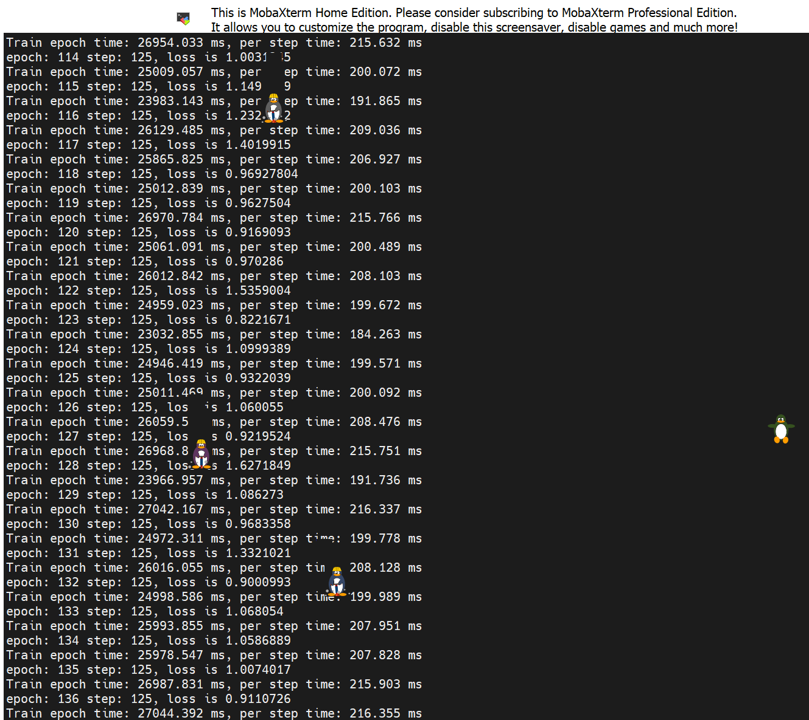